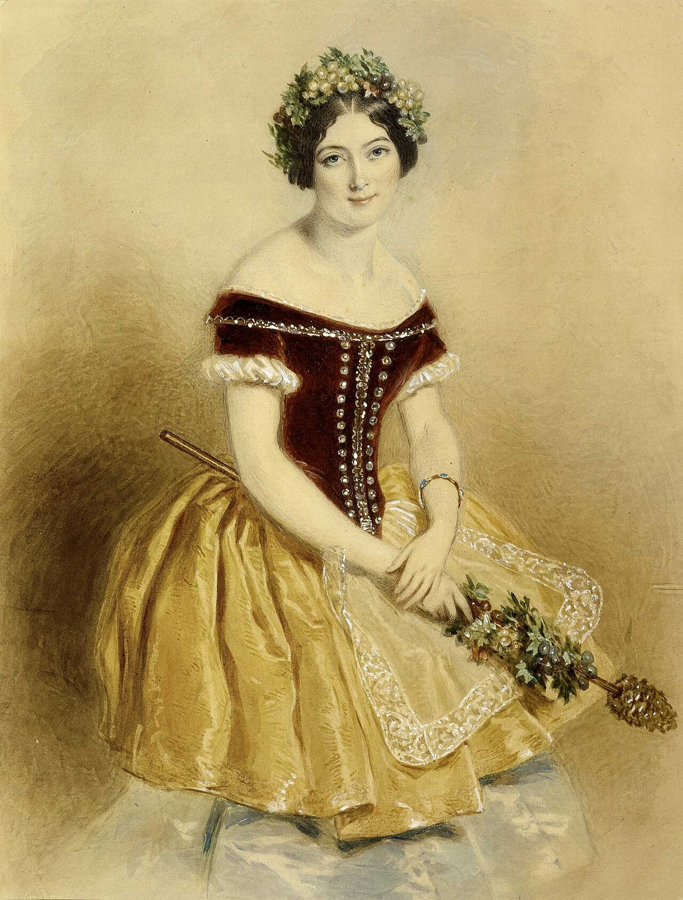
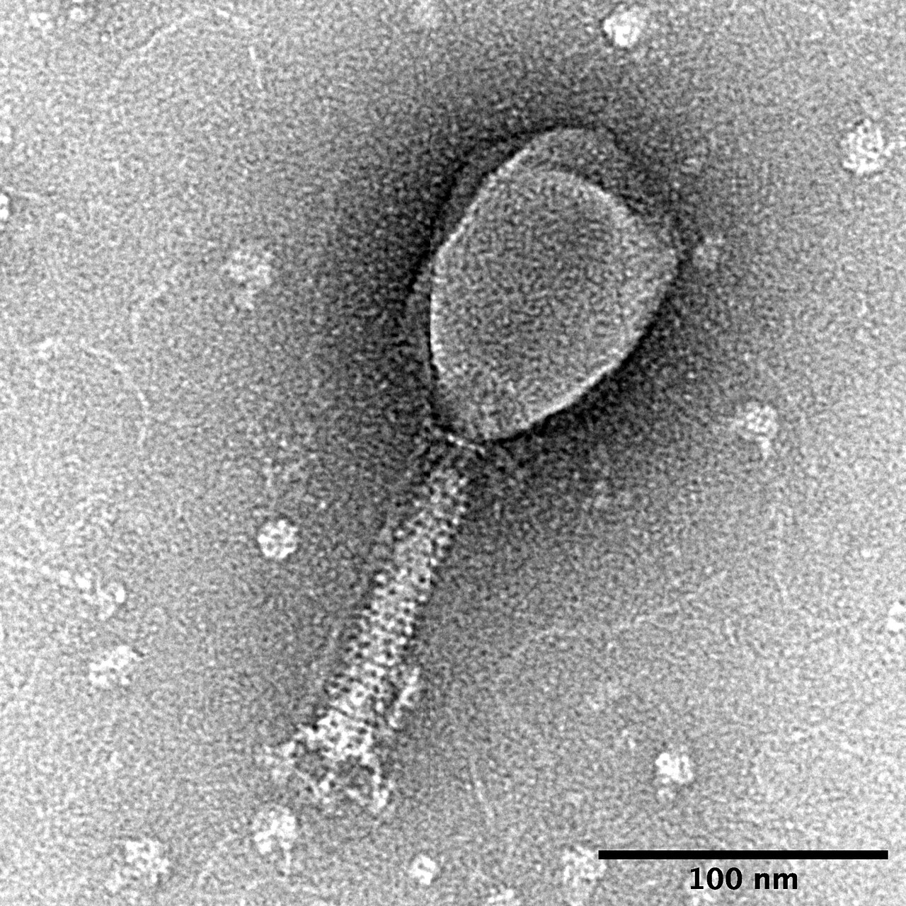
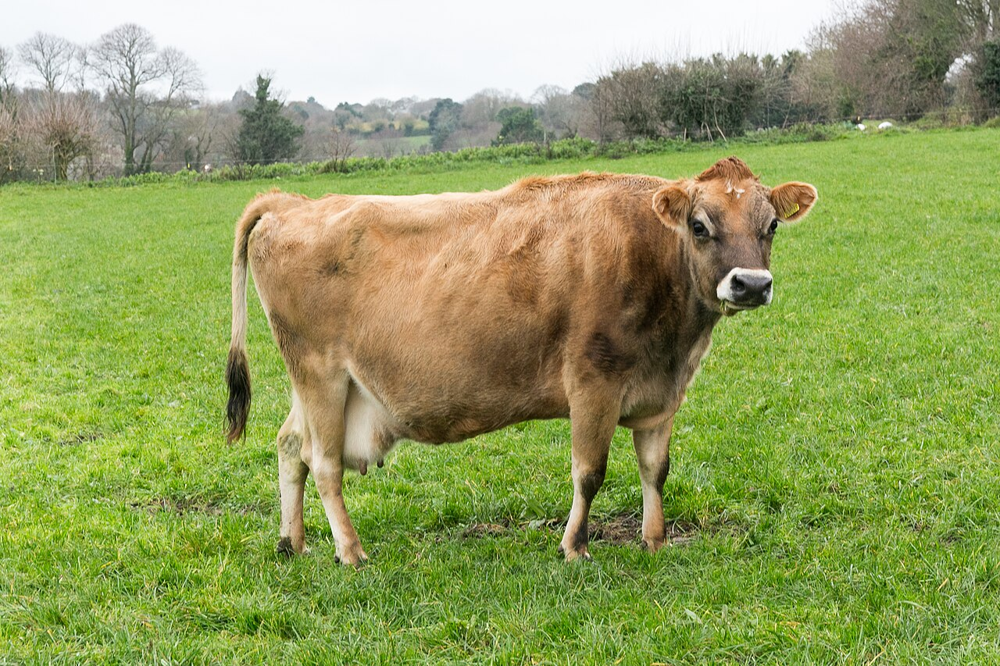
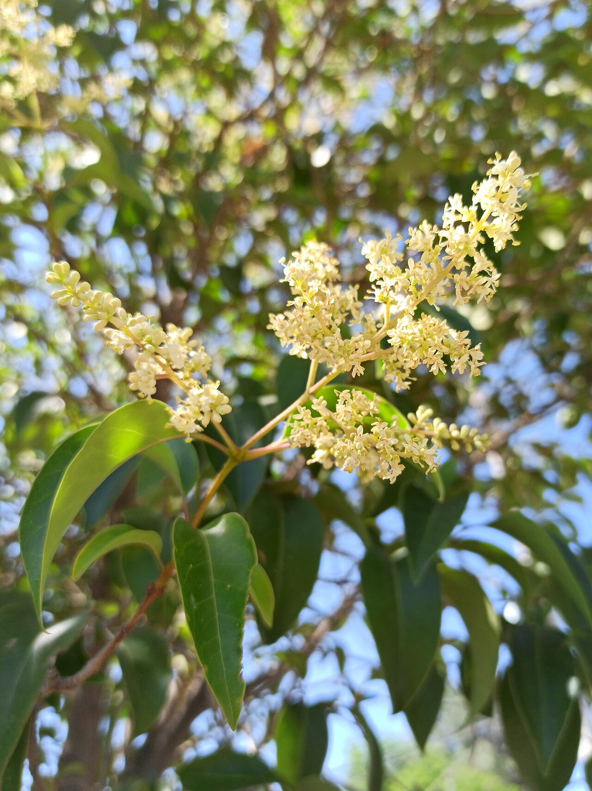
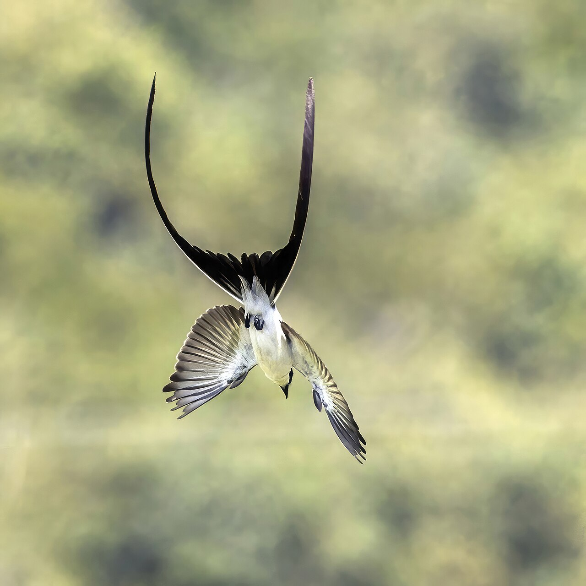
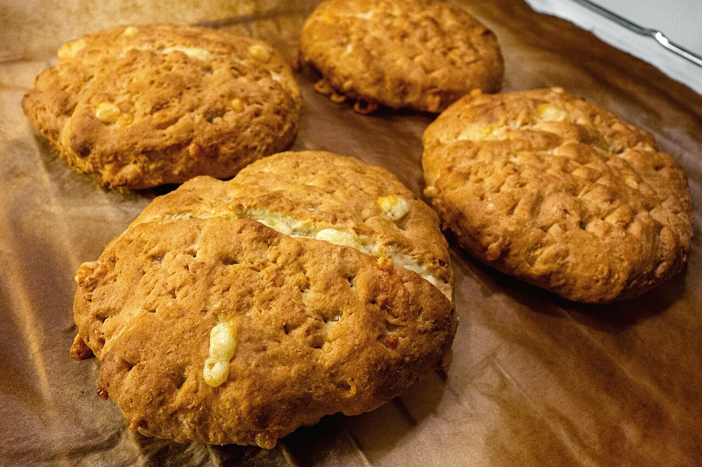
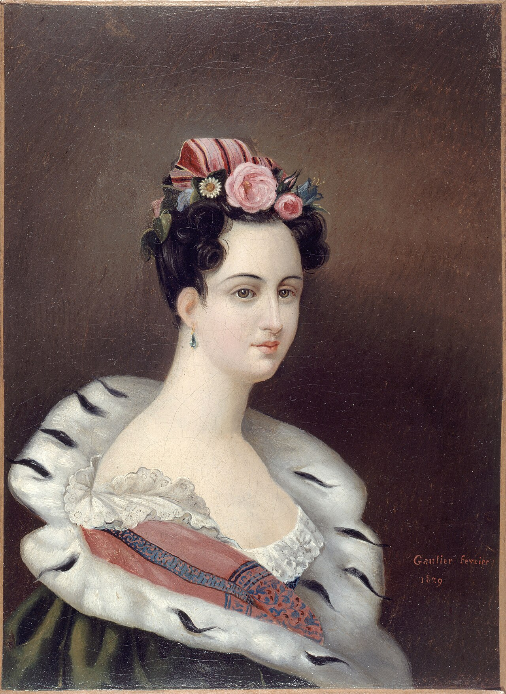
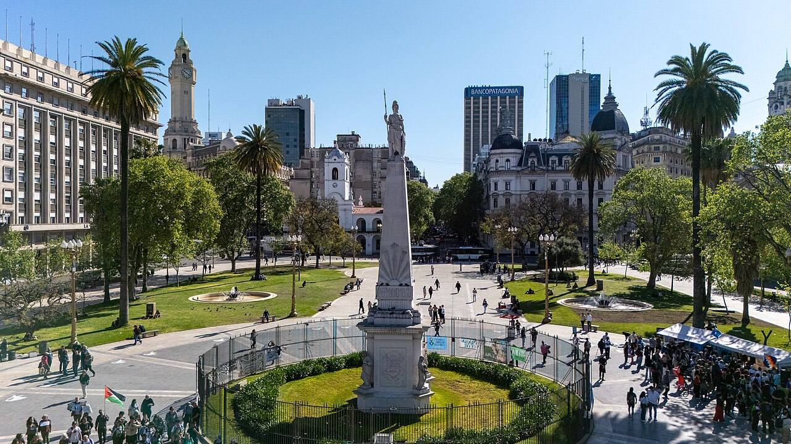

diario de la mañana — el mundo, tu ciudad y lo que te asombra
Nº 17Sábado 17 de octubre de 2026Buenos Aires≈ 35 min de lectura

Tapa: Carlotta Grisi, la primera Giselle, en 1841. Hoy es sábado de ballet. Foto: John Henry Robinson (1796–1871), after Alfred Edward Chal… · Public domain · Wikimedia CommonsBallet
Buen día. Sábado de estudio, frío y despejado: ideal para leer esto de a ratos. El ballet de hoy es el más romántico de todos, Giselle, con un video del segundo acto para ver con los auriculares puestos. La ciencia es para cualquiera que haya clonado algo: unas enzimas de virus que deciden en qué dirección pegar o despegar un pedazo de ADN. Y hoy es 17 de octubre, la fecha que fundó el peronismo.
8° / 15°Mañana fría, entre despejado y parcialmente nublado, con muy baja probabilidad de lluvia. Sin alertas. Campera para la mañana.
Kast visita Bolivia, y Europa cierra su cumbre sin acuerdo
Chile · BoliviaUna visita oficial poco habitual
El presidente chileno, José Antonio Kast, hizo una visita oficial a Bolivia. Los dos países no tienen relaciones diplomáticas plenas desde 1978, por el reclamo boliviano de una salida al mar que perdió en la Guerra del Pacífico. En la agenda estuvieron el comercio, la migración y la seguridad en la frontera.
Por qué importa: es un acercamiento entre dos gobiernos de signo parecido después de años de tensión, y Bolivia es un socio clave para el gas y el litio de la región.
Unión EuropeaUcrania, amenazas híbridas y Ceuta
La cumbre de Bruselas terminó con debates sobre el apoyo a Ucrania, la respuesta a las «amenazas híbridas» (ciberataques, sabotajes, desinformación) y la crisis migratoria en Ceuta, la ciudad española en la costa africana. El presupuesto plurianual sigue sin acuerdo.
EspañaLlega la DANA Adam
La Aemet activó alertas por lluvias y tormentas intensas durante el fin de semana. Una DANA es una depresión aislada en niveles altos: una bolsa de aire frío que se desprende de la corriente en chorro y queda girando sobre la península, cargando humedad del Mediterráneo. Es el fenómeno de la catástrofe de Valencia de 2024.
IndiaLas «cucarachas» vuelven a Nueva Delhi
El movimiento juvenil Cockroach Janata Party convocó otra protesta, una semana después de que la policía detuviera a más de mil jóvenes. Siguen pidiendo la renuncia del jefe de la Comisión Electoral por la revisión de los padrones.
Vaticano · BrasilEl Papa se recupera; Brasil, a una semana
León XIV sigue su posoperatorio en el Gemelli después de que le extirparan un adenocarcinoma de pulmón. Su viaje a la Argentina sigue previsto para noviembre. En Brasil, última semana antes del balotaje del 25: Flávio Bolsonaro dio su entrevista en TV Globo y Lula hizo un acto en Juiz de Fora, en Minas Gerais, el estado que suele definir las elecciones.
Argentina y Buenos Aires no vivir adentro de un táper
Quinta Marcha Federal Universitaria, con incidentes
Otra vez las universidades en la calle
La quinta Marcha Federal Universitaria reclamó el cumplimiento de la ley de financiamiento universitario. Hubo incidentes, heridos y detenidos frente al Congreso. Chequeado desmintió que unas fotos de un supuesto «policía infiltrado» que circularon en redes correspondieran a esta marcha.
Para vos: esa ley define los salarios docentes y los presupuestos de funcionamiento e investigación de las universidades nacionales, la tuya incluida.
Recorte en el Plan Remediar
El Gobierno derogó la resolución que fijaba el listado de medicamentos esenciales del programa y lo redujo a seis principios activos para enfermedades cardiovasculares. Remediar distribuye remedios gratuitos en los centros de atención primaria.
El FMI recorta la previsión y sube el riesgo país
El Fondo bajó su proyección de crecimiento para la Argentina en 2026 y espera una aceleración recién en 2027. El riesgo país subió cerca de un 2 % en la jornada, hasta los 622 puntos, y una encuesta dio que siete de cada diez argentinos consideran mala la situación económica.
Para el finde, en los ratos libres
Hoy, la Filarmónica hace un ensayo abierto y gratuito en el Colón, dentro del programa Barrios al Colón: el Concierto para clarinete n.º 1 de Weber y «Una vida de héroe» de Strauss, con Srba Dinić. Requiere inscripción previa.
Mañana a las 11, el concierto completo, con la obertura de Nabucco. Por el Día de la Madre, comprando dos entradas la tercera es sin cargo.
«Seis tardes con Mae West» sigue en la Sala Lugones hasta el jueves 22.
Ciencia nivel colega
Cómo una integrasa de fago decide si pega o despega el ADN
Cuando un fago temperado infecta una bacteria puede integrar su genoma en el cromosoma del huésped y quedarse ahí, a veces por generaciones, hasta que algo lo induce a salir. La enzima que hace las dos cosas es una recombinasa sitio-específica. Las integrasas de serina grandes (LSI, como las de los fagos φC31, Bxb1 o SPβ) integran solas: unen un sitio attP del fago con un sitio attB de la bacteria y generan los híbridos attL y attR. Para la reacción inversa necesitan una proteína extra, el factor de direccionalidad de la recombinación (RDF). La pregunta vieja era qué le dice a la enzima hacia qué lado ir. El grupo de Phoebe Rice (Universidad de Chicago), con Heewhan Shin como primer autor, lo resolvió con criomicroscopía electrónica y lo publicó en Molecular Cell.

Bacteriófagos, los virus que infectan bacterias. Foto: SnaxMikn · CC BY-SA 4.0 · Wikimedia Commons
El experimento
Qué resolvieron: seis estructuras de complejos integrasa-ADN a lo largo de los dos caminos de reacción, el integrativo (sin RDF) y el escisivo (con RDF). En la versión preprint, con la integrasa del fago SPβ y resoluciones de 4,2 a 7,2 Å.
La pieza clave: un subdominio móvil de la integrasa, con forma de brazo (un coiled-coil). Según dónde quede ubicado, la enzima puede ensamblar un complejo sináptico con ciertos pares de sitios y no con otros.
Sin RDF: el brazo favorece el apareamiento attP × attB. Terminada la recombinación, los productos attL y attR quedan en una conformación trabada, que no puede volver a sinapsar. La integración es, por eso, prácticamente irreversible.
Con RDF: el factor se une a la integrasa y reposiciona ese subdominio. Ahora la enzima arma la sinapsis attL × attR y escinde el profago; lo que queda trabado es el camino de vuelta.
La idea en una línea: la direccionalidad no está en el ADN ni en la química del corte, sino en qué complejos la proteína puede ensamblar en cada estado.
Lectura crítica
Entre 4 y 7 Å se ven dominios y su arquitectura, no cadenas laterales. El modelo del brazo móvil es sólido a nivel de dominios; los contactos finos con el RDF necesitan más resolución o mutagénesis dirigida.
Es una integrasa (SPβ). La familia comparte arquitectura, pero cada RDF es distinto y no está claro cuánto se traslada el detalle a Bxb1 o φC31, que son las que más se usan en el laboratorio.
Son estructuras: fotos fijas de estados. La cinética (cuán rápido se arma cada complejo, cuánto dura) queda para otros métodos.
La conexión con lo que estudiás
A diferencia de Cre-lox, que es reversible y por eso se usa para sacar casetes, una LSI sin su RDF inserta y no saca: es la herramienta cuando querés meter una carga grande en un sitio definido y que se quede. Bxb1 es el motor de varios métodos recientes que combinan prime editing para dejar un sitio de aterrizaje en el genoma y después una integrasa para insertar kilobases enteras, algo que la edición con Cas9 sola hace muy mal. Entender qué controla la dirección es lo que permite diseñar RDF a medida, o integrasas que no vuelvan atrás.
Shin H, Pigli Y, Peña Reyes T, Bello AJ, Fuller JR, Olorunniji FJ, Rice PA. «Structural basis of directionality control in large serine integrases». Molecular Cell (2026), doi:10.1016/j.molcel.2026.09.028 · preprint en bioRxiv · Phys.org
Biotec en el mundo real · Biosidus y el «tambo farmacéutico»

Vacas Jersey, la raza del proyecto. Foto: Pymouss · CC BY-SA 4.0 · Wikimedia Commons
Biosidus nació en 1983 como el área de biotecnología del grupo farmacéutico argentino Sidus y fue pionera en proteínas recombinantes en el país: en 1990 lanzó su eritropoyetina humana recombinante. A principios de los 2000 encaró algo más ambicioso: producir proteínas terapéuticas en la leche de vacas transgénicas.
La secuencia: en 2002 nació Pampa, un clon bovino obtenido por transferencia nuclear de células somáticas. En 2003, Pampa Mansa, clonada y además transgénica, con el gen de la hormona de crecimiento humana. En 2004 nació Pampero, hijo de Pampa Mansa, que la empresa presentó como el primer bovino transgénico macho del mundo.
Por qué la leche: la glándula mamaria es un biorreactor con ventajas difíciles de igualar: produce gramos de proteína por litro, hace las modificaciones postraduccionales de un mamífero y el producto se cosecha sin sacrificar al animal. El truco está en el promotor: el transgén se pone bajo el control de un promotor específico de glándula mamaria, como el de la β-caseína, para que la proteína se exprese solo ahí y no circule por el animal.
Lo difícil es el downstream: hay que purificar la proteína recombinante de una matriz grasa y cargada de caseínas, y después demostrar comparabilidad con el producto de referencia y ausencia de virus o priones de origen animal.
Dónde quedó: las cifras de rendimiento que circularon en la prensa son de la empresa y no tienen validación independiente, y el modelo de producción en animales transgénicos nunca desplazó al cultivo celular, que hoy domina. En el mundo sí hay productos aprobados hechos así, como la antitrombina de cabras.
Salida laboral: transgénesis y reproducción animal, desarrollo de procesos de purificación, calidad y regulatorio de biológicos.
Ciencia en la vida cotidiana · Por qué estornudás en octubre
La primavera porteña es temporada de polinosis. El polen que más molesta no viene de las flores vistosas, que son polinizadas por insectos y tienen granos grandes y pegajosos, sino de las plantas anemófilas, las que se polinizan por viento: plátanos, fresnos, cipreses, gramíneas y el ligustro de la sección de naturaleza. Producen muchísimo polen, liviano y chico (de 15 a 50 µm), que viaja kilómetros.
El mecanismo es una hipersensibilidad de tipo I: en la primera exposición, las células presentadoras llevan el alérgeno a linfocitos T colaboradores de tipo 2, que inducen en los linfocitos B el cambio de clase a IgE. Esa IgE se queda pegada a los receptores FcεRI de mastocitos y basófilos. En la segunda exposición, el alérgeno entrecruza dos IgE vecinas, el receptor se agrupa y la célula se desgranula en minutos: libera histamina, triptasa y, un poco después, leucotrienos y prostaglandinas. La histamina sobre los receptores H1 dilata los vasos, aumenta la permeabilidad y estimula terminales nerviosas: picazón, estornudos, mocos.
Por eso los antihistamínicos de segunda generación (loratadina, cetirizina) dan menos sueño: son más selectivos por H1 periférico y cruzan poco la barrera hematoencefálica, donde la histamina mantiene la vigilia. Y por eso funcionan mejor tomados antes de la exposición: bloquean el receptor, no deshacen la desgranulación ya ocurrida.
Mirá a tu alrededor árbol y ave de la semana
El ligustro, que perfuma y hace estornudar, y la tijereta que volvió

Panojas de ligustro en flor. Foto: Juan Carlos Fonseca Mata · CC BY-SA 4.0 · Wikimedia Commons

Tijereta, con su cola larguísima. Foto: Charles J. Sharp · CC BY-SA 4.0 · Wikimedia Commons
El árbol: ligustro
Nombre científico
Ligustrum lucidum (Oleáceas, la familia del olivo y del jazmín), originario de China
Dónde
En todas partes: veredas, plazas, baldíos. Es una de las especies exóticas más invasoras de la región, y desplaza al monte nativo.
Por qué ahora
Entre octubre y noviembre se cubre de panojas de florcitas blancas con un perfume dulce y pesado que se siente a media cuadra. Después da frutitos negro azulados que comen las aves, que a su vez lo dispersan por todos lados.
Y el estornudo
Es uno de los principales alérgenos de la primavera porteña. Su polen es chico y abundante, y el perfume intenso confunde: lo que te irrita no es el olor sino el polen.
El ave: tijereta
Nombre científico
Tyrannus savana (Tiránidos)
Cómo reconocerla
Imposible confundirla: cabeza negra, dorso gris, vientre blanco y una cola ahorquillada larguísima, que en el macho puede medir más que todo el resto del cuerpo.
Por qué ahora
Es migratoria: pasa el invierno en el norte de Sudamérica y vuelve a la pampa en primavera para criar. Si ves una, llegó hace poco.
Cómo se comporta
Caza insectos al vuelo desde un poste o un alambrado, y es muy territorial: persigue y ataca a chimangos y caranchos mucho más grandes que ella.
Tu misión de hoy
Receta de estación merienda de sábado · con su química
Scones de queso
Veinte minutos de principio a fin, para cortar el estudio. Salen doce.

Scones recién salidos del horno. Foto: W.carter · CC BY-SA 4.0 · Wikimedia Commons
Ingredientes (12 scones)
300 g de harina 0000
2 cucharaditas de polvo de hornear
80 g de manteca fría, en cubos
120 g de queso rallado (sardo, parmesano o el que tengas)
150 ml de leche fría, sal y pimienta
Pasos
Horno a 220 °C. Mezclá la harina, el polvo de hornear y la sal.
Desarmá la manteca fría con los dedos hasta que parezca arena gruesa. Sumá el queso.
Agregá la leche de golpe y uní lo mínimo indispensable: la masa tiene que quedar despareja.
Aplastá a 2 cm, cortá, y al horno 12 a 15 minutos, hasta que estén dorados.
La química de la receta
Por qué suben: el polvo de hornear es bicarbonato de sodio más un ácido en polvo (pirofosfato ácido de sodio, fosfato monocálcico) y un poco de almidón que los mantiene separados y secos. Con la leche se disuelven, reaccionan y liberan CO₂. Los polvos «de doble acción» sueltan un poco de gas en frío y el resto recién en el horno, cuando el calor dispara la segunda reacción. Por eso conviene no demorarse entre amasar y hornear.
Por qué la manteca fría: los trocitos sólidos quedan intercalados entre las capas de masa. En el horno, su agua se evapora de golpe y separa esas capas: eso da el hojaldrado. Si la manteca se derrite antes, recubre la harina y el scone queda arenoso en vez de escamoso.
Por qué no amasar: la gliadina y la glutenina de la harina forman gluten cuando se hidratan y se trabajan. Mucho gluten da una red elástica, buena para el pan y pésima para un scone, que tiene que desarmarse. Por eso se une apenas.
Horno fuerte: 220 °C hace que el CO₂ se expanda rápido y que la superficie dore por Maillard antes de que el centro se seque.
Un clásico en cinco minutos
Théophile Gautier, «El espectro de la rosa» (1838)
El poeta que escribió el libreto de Giselle, tres años antes de escribirlo. Traducción propia.

Théophile Gautier. Foto: autor desconocido · Public domain · Wikimedia Commons
Levantá el párpado cerrado que roza un sueño virginal; soy el espectro de una rosa que llevabas ayer al baile.
Me tomaste todavía con rocío de las lágrimas de plata de la regadera, y entre la fiesta encendida me paseaste la noche entera.
Oh vos, que fuiste la causa de mi muerte, sin que puedas espantarlo, todas las noches mi espectro rosa vendrá a bailar a tu cabecera.
Para entrar al poema
Quién era: poeta, novelista y crítico, Gautier fue el gran defensor del arte por el arte en la Francia romántica, y también el crítico de danza más influyente de su época. Escribió el libreto de Giselle en 1841, después de leer un libro de Heinrich Heine sobre las leyendas alemanas, donde aparecían las wilis: novias muertas antes de casarse que salen de noche a bailar.
El poema y el ballet: en 1911, Michel Fokine convirtió este poema en un ballet de doce minutos para los Ballets Rusos, con música de Weber. Nijinsky hacía de rosa y salía de escena con un salto por la ventana que quedó en la leyenda.
El hilo con hoy: una aparición que vuelve de noche a bailar y que no puede ser espantada. Es exactamente el segundo acto de Giselle, y también la palabra del día.
La palabra del día de dónde viene
espectro sustantivo
latín specere (mirar) → spectrum (aparición, imagen que se presenta a la vista) → castellano espectro · francés spectre · inglés spectre / spectrum
De specere, «mirar», sale media lengua: espectáculo (lo que se mira), inspeccionar (mirar adentro), perspectiva (mirar a través), sospechar (mirar por debajo) y respeto (volver a mirar). Un spectrum latino era una aparición, algo que se presenta a la vista sin tener cuerpo: el fantasma del poema de Gautier.
Y entonces llegó Newton. En 1671, al describir la banda de colores que salía de su prisma, la llamó spectrum: una imagen que aparece, sin sustancia. De ahí vienen el espectro electromagnético, la espectrofotometría con la que medís DO₆₀₀, la espectrometría de masas y el espectro de acción de un antibiótico. Cada vez que leés una absorbancia estás, etimológicamente, mirando un fantasma.
Le français du matin semana 3: la rutina
Le samedi matin
Un sábado tranquilo, en cuatro frases. Escuchalo dos veces.
Le samedi, je me lève tard.
Je range ma chambre.
Après, je fais mes devoirs.
Le soir, je regarde un ballet.
tard
tarde [TAR]
Je range ma chambre
Ordeno mi pieza [yə RANSH ma SHAMBR]
Après
Después [a-PRÉ]
Je fais mes devoirs
Hago la tarea [yə fe me də-VUAR]
Je regarde
Miro [yə rə-GARD]
Un truco
Fijate en je fais: es el verbo faire, «hacer», uno de los más usados del francés y completamente irregular. Lo vas a ver en todos lados: il fait froid (hace frío), je fais mes devoirs (hago la tarea), ça fait combien ? (¿cuánto es?). Vale la pena aprenderlo de memoria desde ahora.
À toi:
English corner level C1 · dance writing
The ballet that invented the ghost
Few works have cast as long a shadow over classical dance as Giselle. Premiered in Paris in 1841, it arrived at the height of the Romantic era, when audiences had developed an appetite for the supernatural and choreographers were only too happy to oblige. Its second act, set in a moonlit forest where the spirits of jilted brides dance men to death, gave the stage one of its most enduring images: a corps of women in white, moving as one.
What has kept the ballet alive for nearly two centuries, however, is not the spectacle but the role itself. Giselle must be played twice over: first as a village girl, all warmth and impulsiveness, and then, after her death, as something barely there at all. The second act asks a dancer to appear weightless without ever looking strained, which is a good deal harder than it sounds.
For Argentine audiences, the ballet carries an extra charge. Marianela Núñez, who grew up in San Martín and joined the Royal Ballet at eighteen, has made the role her own, and her Giselle is widely held up as one of the finest of her generation.
to cast a long shadow over — marcar profundamente, proyectarse sobre
an appetite for — un gusto, un apetito por
only too happy to oblige — encantados de complacer
jilted — abandonada, plantada
enduring — perdurable
twice over — dos veces, por partida doble
strained — forzado, con esfuerzo visible
to hold someone up as — señalar a alguien como ejemplo de
Your turn (answer in English):
Sábado de ballet
Giselle (1841): el ballet romántico por excelencia
Coreografía original de Jean Coralli y Jules Perrot, música de Adolphe Adam, libreto de Théophile Gautier. Dos actos, unas dos horas.
Un pueblo de Renania, la época de la vendimia. Giselle es una campesina con el corazón débil a la que le encanta bailar. Está enamorada de Loys, un muchacho del pueblo que en realidad es Albrecht, un noble disfrazado y comprometido con otra. Hilarión, el guardabosque que también la quiere, lo descubre y lo desenmascara frente a todos. Giselle, humillada, pierde la razón en la escena más famosa del repertorio y muere. Eso es el primer acto.
El segundo transcurre esa misma noche en el bosque, junto a su tumba. Ahí reinan las wilis: los espíritus de las chicas que murieron antes de casarse y que, de noche, obligan a bailar hasta morir a cualquier hombre que encuentren. Su reina, Myrtha, convoca a Giselle. Cuando Albrecht llega arrepentido, las wilis lo condenan. Y Giselle, que ya es una de ellas, lo protege y lo hace bailar con ella hasta que amanece: la campana de las cuatro las devuelve a las tumbas y a él lo salva.
Es el ballet romántico completo: primer acto terrenal, en colores, con danzas de pueblo; segundo acto sobrenatural, en blanco, con el ballet blanc que después copiarían El lago de los cisnes y La bayadera. El tutú largo y vaporoso, las zapatillas de punta usadas para parecer ingrávida: todo eso se consolida acá.
El papel más difícil de actuar: no por los saltos, sino porque son dos personajes en una noche. En el primer acto hay que ser una chica de carne y hueso; en el segundo, algo que casi no está. Las bailarinas suelen decir que es el Hamlet del ballet.
La escena de la locura: sin música de virtuosismo, casi sin pasos. Es pura actuación, con el tema de amor del primer acto que vuelve desarmado, en modo menor.
La música: Adam fue de los primeros en usar leitmotivs en un ballet, temas que identifican a cada personaje y reaparecen transformados. Eso, en 1841, era nuevo.
Qué mirar: Giselle ya es una wili, y todo está pensado para que no parezca tocar el piso. Fijate en los portés, las elevaciones en las que ella queda suspendida y horizontal, como si flotara; en cómo Albrecht la sostiene y la suelta y ella sigue en el aire un instante de más; y en los arabesques penchés, con el torso inclinado y la pierna altísima. Y escuchá: es el tema de amor del primer acto, ahora irreconocible de tan triste.
Qué mirar en una función entera
Acto I, la escena de la locura. Giselle repite, descompuestos, los pasos de su dúo de amor. El momento en que recoge la espada de Albrecht del piso.
Acto II, la entrada de las wilis. El corps de ballet avanza en diagonal con arabesques voyagés, todas exactamente iguales. La prueba de fuego de cualquier compañía: si una sola está desfasada, se rompe el efecto.
La variación de Albrecht. Serie de entrechats six (saltos con las piernas cruzándose seis veces en el aire) hasta el agotamiento: las wilis lo están matando de cansancio, y la coreografía lo cuenta literalmente.
El final. Giselle vuelve a la tumba y Albrecht queda solo con unas flores. No hay apoteosis ni aplauso fácil: se apaga.
En Buenos Aires
El Ballet Estable del Teatro Colón, dirigido por Julio Bocca, cierra el año con Manon, del 5 al 15 de noviembre (te la conté el sábado 10), y después El cascanueces en diciembre. Giselle no está en la temporada 2026, así que por ahora es para ver en video. Fijate en teatrocolon.org.ar cuando salga la programación del año que viene.
Hoy en la historia · un lugar en el mapa
17 de octubre de 1945: el día que nació el peronismo
Juan Domingo Perón era secretario de Trabajo y Previsión, vicepresidente y ministro de Guerra del gobierno militar, y desde ese lugar había impulsado el aguinaldo, las vacaciones pagas y los tribunales del trabajo. Sus rivales dentro del Ejército lo obligaron a renunciar el 9 de octubre y el 13 lo detuvieron en la isla Martín García. El 17, desde la mañana, columnas de trabajadores salieron de los frigoríficos y las fábricas del sur del conurbano, cruzaron el Riachuelo y fueron llenando la Plaza de Mayo, pidiendo su liberación. Muchos se metieron los pies en la fuente. A las once de la noche, Perón salió al balcón de la Casa Rosada.
En las elecciones de febrero de 1946, Perón ganó la presidencia. Desde entonces, el 17 de octubre es el Día de la Lealtad.
Es una de las fechas más discutidas de la historia argentina: quién organizó la movilización, cuánto hubo de espontáneo y cuánto de sindical, sigue siendo materia de debate entre historiadores. Lo que nadie discute es que ese día cambió la política del país para los siguientes ochenta años.
El lugar: la Plaza de Mayo

La Plaza de Mayo, con la Casa Rosada al fondo. Foto: ProtoplasmaKid · CC BY-SA 4.0 · Wikimedia Commons
Desde cuándo
Es el centro de la ciudad desde la segunda fundación, en 1580. Hasta 1884 estuvo dividida en dos por la Recova vieja.
Qué hay
La Pirámide de Mayo (1811), el primer monumento patrio; el Cabildo; la Catedral, con el mausoleo de San Martín; y la Casa Rosada.
Qué pasó ahí
Casi todo: la Revolución de Mayo, el 17 de octubre, los bombardeos de 1955, las rondas de las Madres desde 1977, el 2001.
Las baldosas
Alrededor de la Pirámide están pintados los pañuelos blancos de las Madres de Plaza de Mayo.
Lo que me asombra hoy
Hay 10³¹ fagos en el planeta, y matan la mitad de las bacterias del mar cada dos días
Se estima que en la Tierra hay del orden de 10³¹ partículas de bacteriófagos: diez millones de veces más que estrellas en el universo observable. En un mililitro de agua de mar puede haber diez millones. Puestos en fila, alcanzarían para cruzar decenas de galaxias.
Y no están quietos. Se calcula que los fagos matan entre el 20 y el 40 % de las bacterias marinas por día, lo que libera a la columna de agua el carbono y los nutrientes que esas bacterias tenían adentro. Ese reciclado tiene nombre: el atajo viral (viral shunt), y es una pieza central del ciclo del carbono del océano. Los virus que hoy te sirven para clonar, como el de la ciencia de esta edición, son los mismos que regulan la química del planeta.
Pasatiempo sudoku · nivel difícil
Para el recreo del estudio
Completá cada fila, cada columna y cada caja de 3×3 con los números del 1 al 9, sin repetir. Tiene una sola solución.
746241215657933425193465623
Cuaderno para repasar lo de hoy
Repaso y quiz de la mañana
Repaso de idiomas
Quiz
¿Qué hace falta para que una integrasa de serina grande escinda el profago?
¿Qué sitios se unen en la reacción de integración?
¿Por qué se usan integrasas y no Cre-lox para insertar cargas grandes?
En el tambo farmacéutico, ¿qué controla que la proteína se exprese solo en la leche?
En la alergia al polen, ¿qué anticuerpo queda unido a los mastocitos?
¿Por qué la manteca del scone tiene que estar fría?
¿Qué son las wilis?
¿Quién escribió el libreto de Giselle?
«Je fais mes devoirs» significa…
«Jilted» significa…
Escritura: tres líneas para hoy
Soluciones tocá para destapardadas vuelta, para no espiar
Quiz: un RDF · attP y attB · porque no vuelve atrás · un promotor de glándula mamaria · IgE · para que hojaldre · espíritus de novias muertas · Gautier · hago la tarea · abandonada.
Repaso: je pars à huit heures · je me brosse les dents · je mange une tartine avec du beurre · bajar, reducir · un paso estratégico, un cuello de botella · impasible, con cara de nada.
English 1: Because the dancer has to look weightless without ever showing effort, and play two different characters in one night.

_-_Flowers.jpg){kind=link}
_in_flight_Cayo.jpg){kind=link}